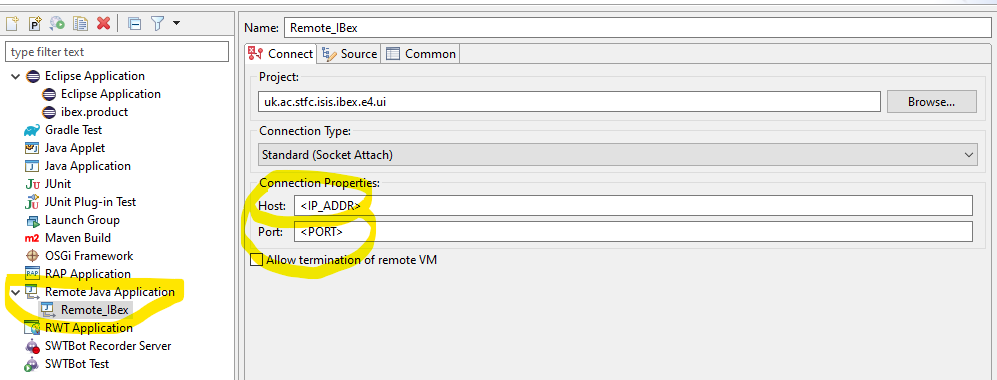

GUI Troubleshooting
This page contains information on how to troubleshoot some common issues with the GUI. These are issues that occur once the GUI has started, not issues in starting the GUI. A good place to start are the log files, they are stored in ...\Instrument\Apps\Client\workspace\logs.
The following pages also contain GUI troubleshooting information for specific problems:
Display resolution & scaling
If the GUI loads up but items are the wrong size, you may need to change your display settings. The exact settings that you need may vary from computer to computer. This is a common issue on Windows 10 machines due to the OS’ scaling setting for text, icons etc. that is meant to ensure they do not look too small on high screen resolutions.
Generally a resolution of 1920 x 1080 with a scaling factor of 100% should look correct on standard screens. You can increase both of those settings slightly if you feel like the display elements look uncomfortably small.
Runtime failure due to security manager
If you use eclipse IDE version 2022-03 to attempt to launch the GUI, you will get an error like the following:
org.osgi.framework.BundleException: Exception in org.eclipse.osgi.internal.framework.SystemBundleActivator.start() of bundle org.eclipse.osgi.
...
Caused by: org.osgi.framework.BundleException: Failed to create security manager
...
Caused by: java.lang.ClassNotFoundException: allow
The solution to this error is to use an older IDE - for example 2021-12 works without issue. Longer-term solution to this issue is to wait for the eclipse IDE team to fix this bug.
Build fails due to Tycho dependencies (e.g. equinox.ds not resolvable; this is only for the Maven build)
Try deleting the .m2 cache directory (in ibex_gui/build/.m2 for GUI/script generator or isis_css_top/.m2 for CSS) and then rebuilding.
ModuleNotFoundError: No module named ‘pywin32_bootstrap’
This may be due to windows file path limits. If you are running from a deeply nested directory after build and try to access the path to python it may run over this file path limit and not be able to find it.
IOC Start/Stop list is not Populated
If the IOC Start/Stop list is blank when the instrument is running then there is a problem with the PV serving this. The PV serving it comes from the DBSRV ioc and ultimately comes from the MySQL database. Console to the BD server:
console -M localhost DBSVR
should not be producing errors (pressing return creates blank lines)
Next check that the database is up.
Target Platform Errors
In some cases when you receive a Resolving Target Definition error, this can relate to some cached files that need to be refreshed and repeatedly performing the loop of Clean project > Set as Target Platform > Reload between 3-10 times can fix this issue. Set as Target Platform and Reload are located on the target view, located at uk.ac.stfc.isis.ibex.targetplatform.target.
JAXB dependency issues
Firstly, as of the March 2020 dependency updates, make sure you have imported the uk.ac.stfc.isis.ibex.jaxb project into eclipse (check out master and pull first).
We have seen some cases of JAXB causing issues with the GUI building. Since Eclipse builds in parallel a race condition can arise between building CSS (which expects some XML classes in the standard library) and the rest of the GUI (which has XML outside of the standard library due to using Java 11). If you have a load of JAXB issues, try the following:
In the project explorer delete all the plugins (Do not delete the files from disk)
Restart Eclipse
Select “Import Existing Projects” and select the GUI base folder
Open the
uk.ac.stfc.isis.ibex.targetplatformfileAfter the project has been imported click the “reload” button and then “Set Target Platform” in the top right. Note that these two buttons do not do the same thing and it necessary to press them both in order.
This seems to be the best way to resolve this. If you have persistent issues with JAXB and this method not working, please inform the team as we would like to investigate.
Delete dotfiles
If Eclipse gets very confused with the project build, you might want to completely wipe clean all files/folders used in the project. You can create a new workspace but there are still several additional folders worth deleting if needed. In your user folder, there should be hidden “dot” folders called:
.m2(contains downloaded dependencies).p2.eclipse
Client fails to start at runtime
If it produces a log with:
Unresolved requirement: Require-Capability: osgi.ee; filter:="(&(osgi.ee=JavaSE)(version=11))"
You may have built with Java 11 but are running with Java 8 make sure the path is set correctly without Java 8 on it and that you are using the correct version at run time.
You can verify that you are using the correct java version by running java -version in a command prompt. It should return java 11 in a non-EPICS terminal, or java 8 in an epics terminal (note, you cannot launch the GUI from an EPICS terminal). If it returns the incorrect version, you can add the correct version to your PATH.
File set from project … has no valid check configuration.
GUI claims another instance is running upon start (but there isn’t)
Navigate to: C:/Users/<username>/AppData/Local/IBEX and delete the file “instance.txt”
maven-built client can’t see referenced files
Add Eclipse-BundleShape: dir in the MANIFEST.MF; see the .opis MANIFEST.MF for an example of this.
This makes the maven build build the directory into a directory rather than a jar, which is sometimes necessary to let eclipse then “see” the files natively on the filesystem. If you look in the plugins/ folder of a built client you should see a folder for .opis but a .jar for most other ibex modules - except for a few that need to be built as directories, as you may be finding.
Other issues
Remote debugging with Eclipse
The following has been done to ensure that it is possible to debug the IBEX GUI running on any particular instrument:
The JDWP agent is added to IBEX GUI. In individual installations it will run on an available port dynamically determined at run-time.
There is a utility available in
\\isis\shares\ISIS_Experiment_Controls_Public\ibex_utils\ibex_gui_utilities - getJVMInfo.batSSH server is installed on all instruments and port forwarding is enabled.
The following needs to be done to debug the instance:
Open Command prompt in the Instrument.
Get the port on which JDWP is enabled for the instrument by executing the following on the command prompt:
\\isis\shares\ISIS_Experiment_Controls_Public\ibex_utils\ibex_gui_utilities\getJVMInfo.bat. From the output copy the value against dt_socket.In your local machine open command prompt and enter
ssh –L <Your_Port>:127.0.0.1:<DEBUG_PORT> <TOP_SECRET_UID@<SERVER>. For examplessh –L 12345:127.0.0.1:66666 spudulike@ndxscidemoSet the debug configuration (Run ==> Debug Configurations… ==> Remote Java Application) on the eclipse as shown below. Use 127.0.0.1 as host name and <Your_Port> as the port: 
Debugging local code with Eclipse
When eclipse build starts it will print on the console the port it is listening for debugging. Similar to :
Listening for transport dt_socket at address: 60796Set a debug configuration for Remote Java Application with host as localhost and port as obtained above.
Accessing pydev’s preferences
To access pydev’s “secret menu” to change preferences in the interactive console, press ctrl-alt-p when focused on the console.
This allows you to set things like ad-hoc commands that get run before genie is loaded.